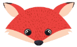
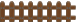
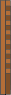
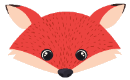
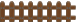
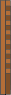

Territory
Click on the animals that are next to thea fence, to move it.
Your goal is that:
every region contains exactly animals.
the regions contain at least beavers each
Click on the animals that are next to thea fence, to move it.
Your goal is that:
every region contains exactly animals.
the regions contain at least beavers each
 




